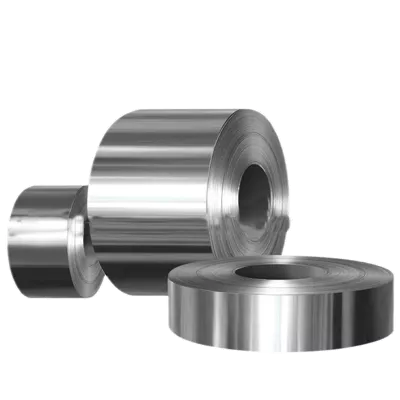

Buy Stainless Steel Strips and Coils from Indonesia
HS Code:
721913 Flat-rolled stainless steel, in coils
Stainless Steel Strips and Coils are precision-engineered flat-rolled products widely recognized for their strength, durability, and corrosion resistance.

These products are widely utilized across multiple industries, including automotive, construction, kitchenware, electronics, and medical equipment manufacturing, thanks to their versatility and reliability.
In addition, stainless steel strips and coils are available in different grades, tempers, and surface finishes, making them suitable for specialized applications that demand precision, strength, and aesthetic value.
Get Stainless Steel Strips and Coils for Sale
Are you looking for a reliable Indonesia manufacturer Stainless Steel Strips and Coils for your needs?You’ve come to the right place! Contact us at OneWholesaleIndo.com, and we will be happy to provide the right solution tailored to your needs.
Stainless Steel Strips and Coils Uses
Automotive Industry
- Used in exhaust systems, clamps, and precision components due to their high strength, heat resistance, and corrosion protection.
- Stainless steel strips and coils can be stamped, welded, or fabricated into various automotive parts that require durability and reliability.
Construction & Architecture
- Ideal for roofing, wall panels, structural supports, and decorative finishes thanks to their strength and aesthetic appeal.
- Supplied in coils or strips that can be cut, bent, or formed into construction elements, ensuring long-lasting performance in outdoor environments.
Kitchenware & Appliances
- Provides hygienic, corrosion-resistant surfaces for cookware, sinks, and household appliances.
- Stainless steel coils are processed into sheets or molded into finished products for both household and industrial kitchen applications.
Electronics & Medical Equipment
- Precision strips are used in springs, connectors, surgical instruments, and other sensitive applications requiring accuracy and safety.
- Stainless steel strips are fabricated with exact tolerances and surface finishes, tailored for electronic and medical-grade standards.
Indonesia Stainless Steel Strips and Coils Products
Here are some Indonesian stainless steel productsAnnealed (Soft) Strips
Stainless strips in soft condition with BA (Bright Annealed) or 2B finish, suitable for forming, deep drawing, and welding applications.Tempered (Hard) Strips
Hardened strips with various hardness levels, ranging from 1/8 Hard to Super Extra Hard. Commonly used for springs, clips, and contact strips.Precision Thickness Strips
Ultra-thin strips with thickness down to 0.05 mm and precision tolerance of ± a few microns. Widely used in electronics, medical devices, and precision components.Narrow Width / Slit Strips
Strips produced through slitting with a minimum width of 5 mm. Ideal for cables, springs, and micro components requiring customized narrow widths.Stainless Steel Grades
Available in various grades such as 301, 304, 316L, 321, 904L, and others, tailored to corrosion resistance, formability, and specific industrial needs.Surface Finishing
Options include Bright Annealed (BA), 2B, and Skin Pass finishes, for both aesthetic and functional surface performance.Stainless Steel Strips and Coils Specifications
- Minimum thickness: 0.05 mm
- Minimum width: 5 mm
- Key equipment: 20-High Sendzimir Mill, Vertical Bright Annealing Line, Skin Pass Mill, Slitting Line, Tension Leveling Line.
Indonesia Stainless Steel Strips and Coils for Sale
Indonesia has emerged as a competitive stainless steel producer, supported by its abundant raw material supply and rapidly growing manufacturing base.With access to rich nickel reserves—one of the key components in stainless steel—Indonesia enjoys a natural advantage compared to many other countries.
Its strategic geographical location in Southeast Asia also provides shorter shipping routes, reducing lead times and logistics costs.
Combined with modern production facilities, a skilled workforce, and government support for industrial growth.
Indonesia is able to supply stainless steel strips and coils with consistent quality, competitive pricing, and reliable delivery schedules.
This strong foundation makes Indonesia a trusted and sustainable source for stainless steel strips and coils for worldwide.